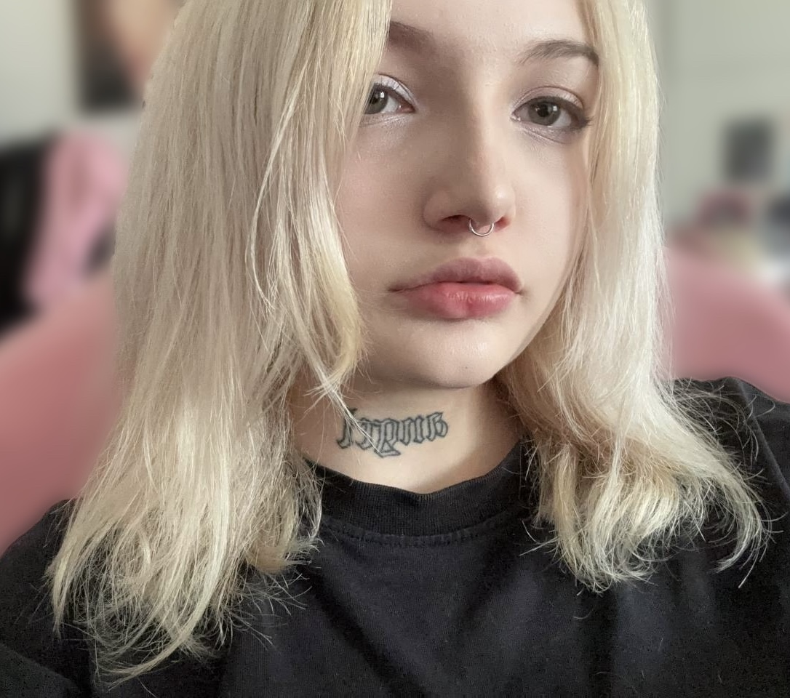
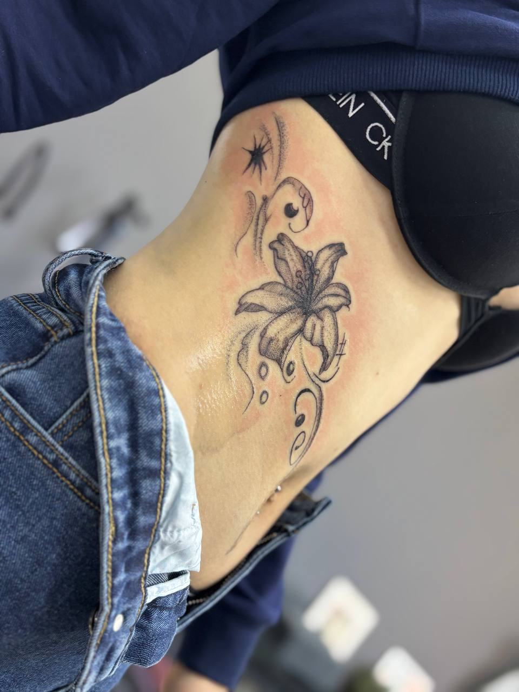
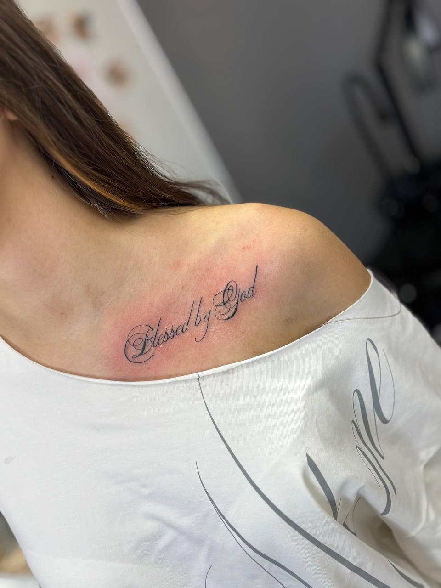

Трайбл
Крупная композиция с резкими формами и вытянутым силуэтом по боку.
Привет! Я Ева, тату-мастер из Волоколамска. Работаю во всех направлениях, пробую себя в разных стилях и люблю делать как нежные, так и более смелые проекты. Можно прийти со своим эскизом или доверить идею мне и мы соберём татуировку под тебя.

Немного ближе познакомиться с мастером, прежде чем прийти на сеанс 💗
Я работаю тату-мастером с 2021 года и принимаю в студии Beauty Line в Волоколамске. Мне нравится не зажимать себя в один стиль, поэтому я пробую разные направления и спокойно работаю как с минималистичными и нежными татуировками, так и с более крупными, контрастными или необычными проектами.
Работаю и с чужими эскизами, и со своими. Если у тебя уже есть референс, адаптирую его под тело, размер и место. Если идеи пока только в голове, помогу собрать всё в цельную татуировку 🌷
Что для меня важно в работе:
Аккуратность, комфорт на сеансе и результат, который будет нравиться тебе не только в день татуировки, но и спустя время. Я всегда подскажу по размеру, расположению, подготовке и заживлению, а если нужно, честно скажу, как сделать эскиз лучше, чтобы он красиво смотрелся именно на теле.
Я за спокойную атмосферу без пафоса и за татуировки, которые действительно хочется носить
Работаю в разных стилях. Больше работ, процессы, анонсы и актуальная информация регулярно выходят в телеграм-канале.
Крупная композиция с резкими формами и вытянутым силуэтом по боку.

Нежная цветочная композиция с лёгким, аккуратным контуром.

Лёгкая композиция с бабочками для маленькой, аккуратной татуировки.

Контрастная поясничная работа с графичной, острой формой.

Большая цветочная работа с насыщенным цветом и мягкой растяжкой.

Органичная работа на шее и плече с множеством деталей и изгибов.

Бабочки и цветочные ветви с ярким красным акцентом.

Мягкая цветочная татуировка для тех, кто любит спокойные и воздушные работы.

Тонкие надписи и деликатные шрифтовые татуировки.
Если хочешь быстро сориентироваться по стоимости, можно открыть телеграм-бота и рассчитать примерную цену татуировки. Это удобный способ понять диапазон ещё до записи ✨
База, которая поможет комфортно пережить сеанс и красиво заживить татуировку 🌷
Перед сеансом:
После сеанса:
Частые вопросы перед записью
Точная цена зависит от размера, сложности, места и самого эскиза. Для быстрой оценки можно воспользоваться калькулятором стоимости, а для точного расчёта просто напиши мне и пришли идею или референсы.
Да, конечно. Я работаю и с готовыми референсами, и с чужими эскизами. При необходимости подскажу, как лучше адаптировать их под тело, размер и место.
Нет, я работаю в разных направлениях и люблю пробовать разные стили. Поэтому можно приходить и за нежной флористикой, и за трайблом, и за более минималистичными или необычными идеями.
Вся актуальная вспомогательная информация регулярно выходит в телеграм-канале. Там всегда можно ознакомиться с правилами ухода, подготовкой к сеансу и другой важной информацией.
Я работаю в студии Beauty Line в Волоколамске. Если хочешь записаться, удобнее всего сделать это через онлайн-запись или написать мне напрямую в Telegram / VK.
Выбирай удобный способ связи 💌
Так я смогу быстрее сориентировать по идее, времени и стоимости ✨